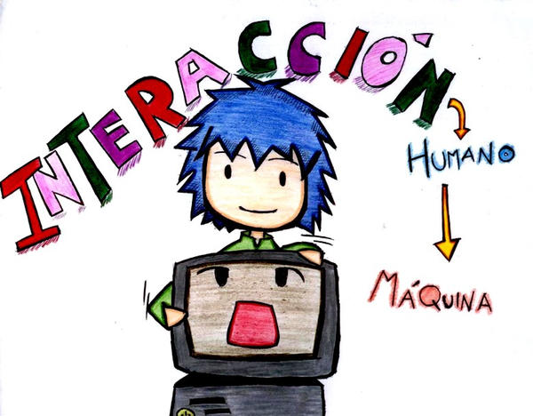

Citas de paginas: Recuperado de: ¿Qué es la Interacción Humano-Computadora? | Opinno. (s. f.). https://blog.opinno.io/es/blog/que-es-la-interaccion-humano-computadora
Recuperado de: http://sedici.unlp.edu.ar/bitstream/handle/10915/20393/Documento_completo.pdf?sequence=1